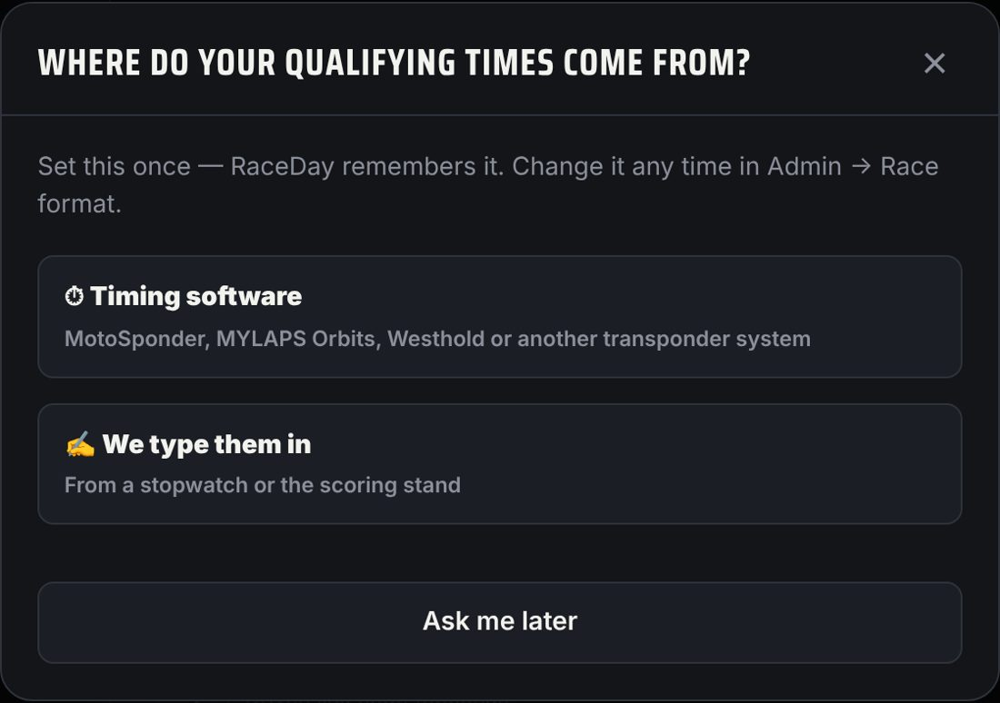
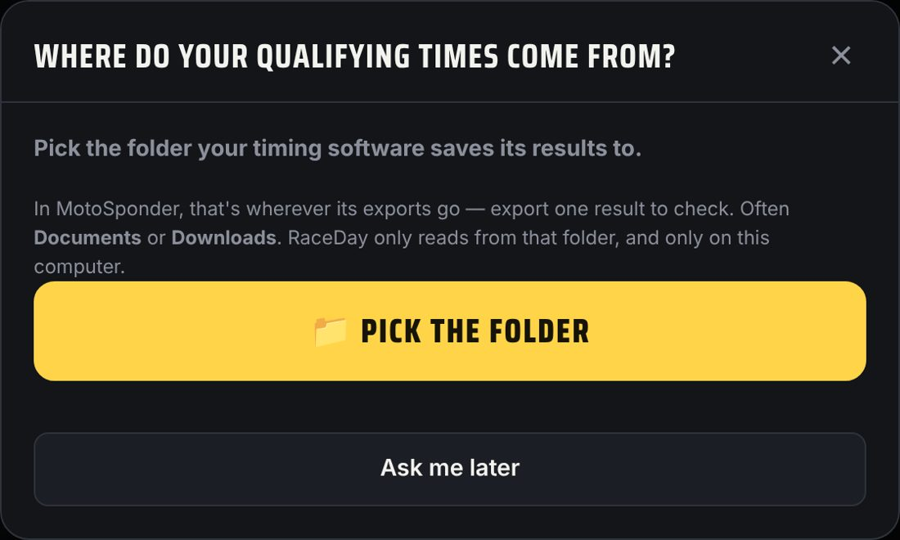
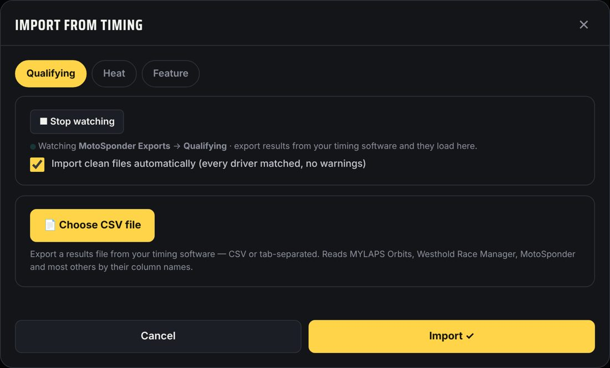

What you need
- A Windows or Mac computer that runs your timing software (MotoSponder or similar)
- Google Chrome or Microsoft Edge on that same computer
- RaceDay open in Chrome or Edge on that computer — the computer that saves the results files
- Your timing software saving its results to one folder as CSV or text files
- Drivers signed up in RaceDay with their number or transponder, so the results match them
Won't watch a folder
- iPad, iPhone or Android phones and tablets
- Safari or Firefox, even on a computer
- A different computer from the one running the timing software
On these, results still import — you just choose the file yourself after each session: 📥 Import timing → 📄 Choose CSV file.
How it works — flow chart
Two parts: set it up once, then race night. Follow each top to bottom. A path ends where you see END.
1 · Set up (once)
2 · Race night (folder picked)
-
Tell RaceDay where times come from
The first time you set a class to Qualifying · 1 heat or Qualifying · straight to mains, RaceDay asks. Tap ⏱ Timing software. Missed it or want to change it? Admin → Race format → Qualifying & heat times.

Asked once -
Pick the folder your timing software saves to
Do this on the timing computer, in Chrome or Edge. Tap 📁 Pick the folder and choose the folder your timing software exports results to. Not sure which one? Export one result from your timing software and see where the file lands — often Documents or Downloads. When Chrome asks, choose View files / Allow. RaceDay only reads that folder; it never changes anything in it.

Pick the export folder -
Race night: start watching
On Lineups, tap 📥 Import timing, pick the step (Practice, Qualifying, Heat, B-main or Feature), then tap 📁 Start watching. You'll see a green dot and Watching <your folder>. Leave this window open, and switch the step as the night moves on. Files already in the folder are ignored — only new results load. A file with Practice in its name always goes to the tag check (below), and the next race file goes back to the step you had open.

Watching — new results load on their own -
After each session, export from your timing software
Save the session's results the way you normally do. Within a few seconds RaceDay reads the file. If every driver matches (by transponder, number or name) and nothing looks wrong, it imports on its own. If a driver isn't in RaceDay, a time can't be read, or a lap looks like a missed tag read, it waits — check the preview and tap Import ✓. Turn off Import clean files automatically if you'd rather check every file.
-
Before the heats: the tag check
Export each practice group's results and load them on the Practice step (or let the folder pick them up). RaceDay lists every signed-up driver whose transponder or tag was never read on track — a dead, missing or swapped tag — so it gets fixed before it costs someone a heat. Practice files never change any results.
-
Watch for the yellow warnings
Tags sometimes don't get read, and the car shows one very slow lap and a lap short. Before you import, the preview points these out: “a lap of 2:22 (about 11 laps long): likely a missed tag read”, a car laps down without a DNF, or a time your timing software marked with *. Results still import exactly as the file has them — check with the timing stand, fix the file there if a result is wrong, and import it again.
-
B-mains
When a class has more cars than its feature holds, a B-main step appears. Import each B-main's results file there and RaceDay moves the top finishers into the feature lineup. Import the feature after the B-mains — if a feature file has a car that isn't in the lineup yet, the preview says so.
If something's not working
- No “Watch” button? You're not in Chrome or Edge on a computer. See What you need above — or use 📄 Choose CSV file after each session.
- Asks for permission each time? That's Chrome keeping your files safe — tap 📁 Start watching and choose Allow. Once a night is normal.
- Nothing loads? Check your timing software is saving into the same folder you picked, as a .csv, .txt or .tsv file. Change it in Admin → Race format → Qualifying & heat times.
- Went into the wrong step? The step tabs at the top (Practice, Qualifying, Heat, B-main, Feature) decide where results go — switch before the next session's file.
- Same kart number in two classes? That's fine — RaceDay matches each file's cars inside that file's class first. If two drivers in the same class still share a number, the preview shows a Conflict to check.
- Files without a Class column? Put the class in the file name (for example Late Model Heat 1.csv or Junior 80cc Feature Results.txt) and RaceDay picks the class for you. Dates and words like Heat, Main, Feature, LCQ, Semi and Results are ignored.
- Works with MotoSponder, MYLAPS Orbits and Westhold Race Manager (recognized automatically) and most other timing software that exports a results file. There's no live connection to the timing system — RaceDay reads the files it saves.
Next guides
Still stuck? The Field Manual walks through every screen, and the FAQ covers common questions. Or just text me — it's the fastest way to get an answer.
💬 Text Josh · (260) 207-4983 →or email